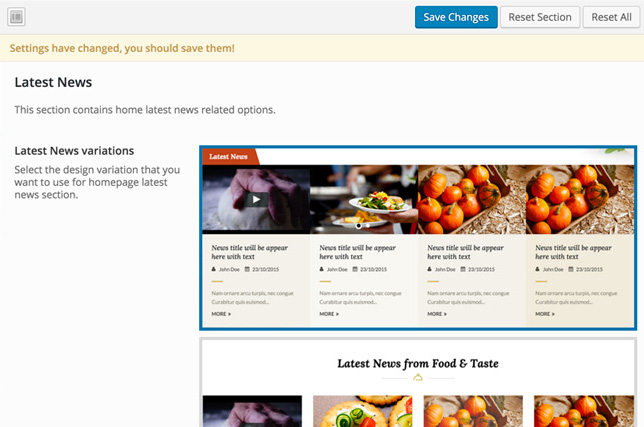

Home Page Options
This section has multiple self explaining settings related to home page.
In main area, you can choose to put a Slider or a static image banner under the header for home page.
Note: The slider images are coming from the recipes which are chosen to be shown in the home page and also has a slider image uploaded in the related meta information area.
Choosing a slider gives you various following options.
1 - It allows you to choose from four slider styles.
2 - You can choose number of slides to display.
3 - In other options you can put a corner image on any side of the slider section as seen in our demo installations.

Choosing a banner image gives you the following options.
It allows you to upload an image that will be used to display in the slider area of the home page.
Layout (Sub menu)
The layout section contains the blocks of all the available sections of home page which you can enable/disable or re-arrange according to your choice.
What's Hot (Sub menu)
This section contains home what's hot section related options. You can choose the section design from given three variation.
This section allows you to display recipes from recent entries or selected ones of your choice. You can choose how many recipes you want to display in this area as well.
At the end you can put a corner image on any side of this section as seen in our demo installations.
Chefs Section (Sub menu)
In this section you can choose any design from given three variations.
You can also choose recent, or specific chefs to display in this section. The number of chefs to display control is also available.
Latest News Section (Sub menu)
In this section you can choose any design from given three variations.
You can also control the number of posts to display. The control for showing recent posts or tags/categories/selection based is also available. You can also skip some specific posts by their IDs if you like.

At the end you can put a corner image on any side of this section as seen in our demo installations.
Big Banner Section (Sub menu)
The big banner section has the option to put a big image banner with a Title, Description, and a button with link behind it. All the related options are available in this section.

Special Recipe Section (Sub menu)
This section contains the options to show a special recipe for the day/week/month/year any choice you want.
From the given options You can choose a title for this section, a recipe from the drop-down menu, and button text.